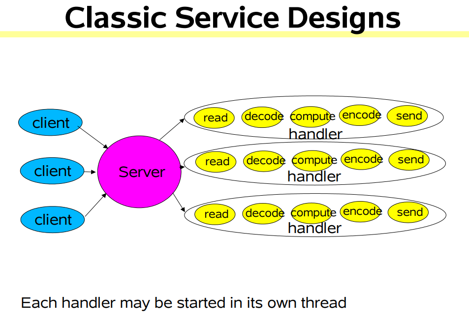
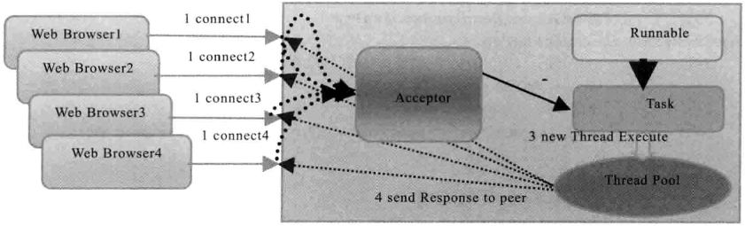
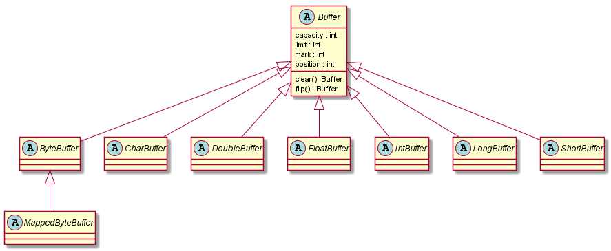
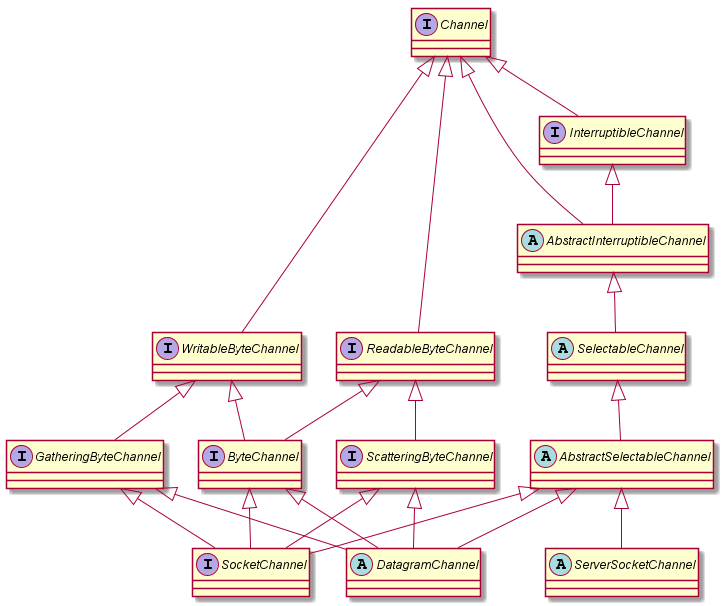

JVM内存模型
根据《Java虚拟机规范(Java SE 7 版)》的规定，Java虚拟机所管理的内存包括几下几个运行时数据数据:

在使用@value注解之后，字段总是为空。后来发现是因为字段使用了static修饰。
1 | @Component |
spring的依赖注入不支持为static变量注入。spring 依赖注入的底层原理还是利用反射来创建对象。而static变量，在jvm加载类的时候便已经创建，存在于方法区，被所有实例共享，属于类的属性而不是对象的属性。spring是基于对象层面的依赖注入。
Java 的 IO 模型本质上还是利用操作系统提供的接口来实现,所以最好先了解Linux底层模型。推荐阅读Linux IO模式及 select、poll、epoll详解
在JDK1.4之前，基于Java的所有Socket通信都采用同步阻塞模式(BIO)，这种一请求一应答的通信模型简化了上层的应用开发，但是在性能和可靠性方面却存在着巨大的瓶颈。当并发量增大，响应时间延迟增大之后，采用Java BIO开发的服务端只有通过硬件的不断扩容来满足高并发和低延迟，它极大的增加了企业的成本，笨企鹅随着集群规模的不断膨胀，系统的可维护性也面临巨大的挑战。
代码类似这样:
1 | public class BlokingIoServer implements Runnable{ |
Web服务，大多数有着类似的流程:
Read request (从底层IO读取网络字节请求)
Decode request (把读取的网络字节请求进行解码,封装成为业务请求对象)
Process service (对解码封装后的业务请求对象进行业务处理)
Encode reply (将业务逻辑处理完后的响应进行编码为底层IO可传输的字节响应)
Send reply (利用底层IO发送已编码的字节响应)
不同之处在于，每一个步骤底层使用的技术和手段不同，比如:
XML解析,文件传输,Web页面生成,计算服务…..

经典(传统)的网络服务设计如上图所示，对每个请求都会产生一个新的线程来进行处理，这种设计的缺点是，线程的创建本身是系统资源的一个开销，如果并发请求达到一定数量，响应将会变慢，甚至有可能因为系统资源不足而造成系统崩溃。
为了解决同步阻塞I/O面临的一个链路需要一个线程处理的问题，后来有人对它的线程模型进行了优化，后端通过一个线程池来处理多个客户端的请求接入，形成客户端个数线程池最大线程数W的比例关系，其中A/可以远远大于M通过线程池可以灵活的调配线程资源， 设置线程的最大值， 防止由于海量并发接入导致线程耗尽。

当有新的客户端接入的吋候，将客户端的Socket封装成一个Task （该任务实现java.lang.Runnable接口）投递到后端的线程池中进行处理，JDK的线程池维护一个消息队列和/V个活跃线程对消息队列中的任务进行处理。由于线程池可以设置消息队列的大小和最大线程数，因此，它的资源占用是可控的，无论多少个客户端并发访问，都不会导致资
源的耗尽和宕机。
1 | public class TimeServer { |
伪异步IO解决的线程的频繁创建销毁问题，但是如果通信对方返回应答时间过长，会引起级联故障:
NIO，有人解释为new I/O,有人解释为Non-block I/O(我更倾向后者)。
正是由于Java传统BIO的拙劣表现，才使得Java支持非阻塞I/O的呼声日渐高涨，最终，JDK1.4版本提供了新的NIO类库，Java终于也可以支持非阻塞I/O 了。NIO主要的类和接口如下:
新的NIO类库的提供，极大地促进了基于Java的异步非阻塞编程的发展和应用，但是，它依然有不完善的地方，特别是对文件系统的处理能力仍显不足，主要问题如下。
2011年7月28日，JDKI.7正式发布。她将原来的NIO类库进行了升级，被称为NIO2.0。它主要提供了如下三个方
面的改进。
Buffer是一个对象，它包含一些要写入或者要读出的数据。在NIO库中，所有数据都是用缓冲区处理的。在读取数据时，它是直接读到缓冲区中的；在写入数据时，写入到缓冲区中。任何吋候访问NIO中的数据，都是通过缓冲区进行操作。
缓冲区实质上是一个数组。通常它是一个字节数组(ByteBuffer),也可以使用其他种类的数组。似是一个缓冲区不仅仅是一个数组，缓冲区提供了对数据的结构化访问以及维护读写位置(limit)等信息。
最常用的缓冲区是ByteBuffer, 一个ByteBuffer提供了一组功能用于操作byte数组。除了 ByteBuffer,还有其他的一些缓冲区，事实上，每一种Java基本类型(除了 Boolean类型)都对应有一种缓冲区，具体如下。

每—个Buffer类都是Buffer接口的一个T实例。除了 ByteBuffer,每一个Buffe类都有完全一样的操作，只是它们所处理的数据类型不一样。因为大多数标准I/O操作都使用ByteBuffer,所以它除了具有一般缓冲区的操作之外还提供一些特有的操作，方便网络读写。
Channel是一个通道，可以通过它读取和写入数据，它就像自来水管一样，网络数据通过Channel读取和写入。通道与流的不同之处在于通道是双向的，流只是在一个方向上移动（一个流必须是InputStream或者OutputStream的子类），而且通道可以用于读、写或者同时用于读写。
Channel的类继承图如下。

因为Channel是全双工的，所以它可以比流更好地映射底层操作系统的API。特别是在UNIX网络编程模型中，底层操作系统的通道都是全双工的，同时支持读写操作。
这两天抽空用hexo搭建了一个静态博客，并且使用travis+github pages做持续集成。后来对github pages的响应速度不是很满意，便将博客换成了hexo+travis+oss。
实现的效果是只需要提交代码，便自动将博客更新到github pages 和oss上面。
使用hexo+travis+github pages 完成持续部署的过程不在赘述，网上有很多教程，不过质量参差不齐，这里推荐一篇：
使用Travis CI自动部署Hexo博客
创建BigDecimal对象常用的方式有2种：
1 | BigDecimal a = new Bigdecimal(1); |
不推荐使用new 关键字创建Bigdecimal对象。原因是当new 的值是一个小数的时候，其真实的值并不是我们想要的值
1 | BigDecimal b = new BigDecimal(1.1); |
输出:
1 | 1.100000000000000088817841970012523233890533447265625 |
这在比较大小的时候，很可能出现意想不到的结果。